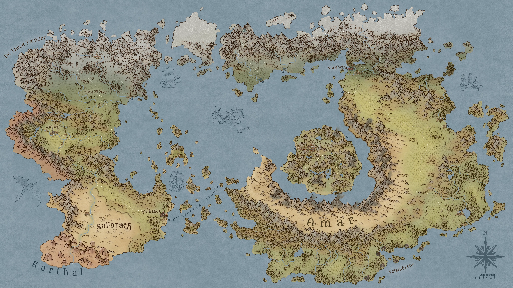

En by i den nordøstlige del af Thalassor. En af de store byer, som i samarbejde med Eldoria, Velmora, Sir'Haleth og Velstaderne, har rekrutteret heltegrupper til at udforske det voksende mørke i Thalassor. Intet yderligere er endnu afsløret om dens forbindelser til kampagnen.
En klippeby dybt i bjergkæden De Tavse Tænder langt mod nord — fødeby for dværgbrødrene Håvard, Sigurd og Torbjørn. Gruppen har aldrig selv rejst hertil, men lærte byens historie at kende gennem brødrenes fortælling i Pilion.